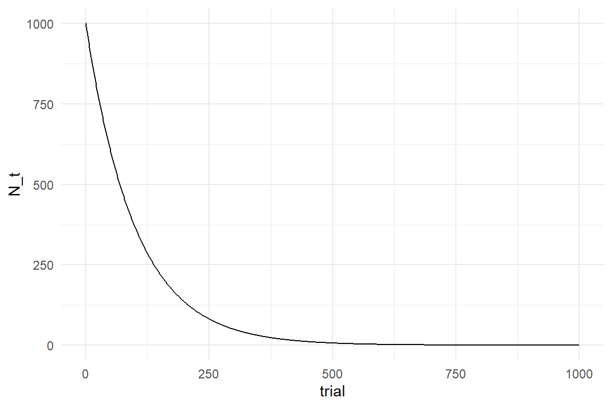

9 Learning curve models
This chapter is under construction!
9.1 The tweak-finder model of building skills
As learning we describe the psychological process of improving performance by means of training. This can be many things, such as learning a language, learning to multiply large numbers or learning to lace your shoes. Broadly, two types of learning can be distinguished, that often appear in that order: For lacing her shoes, a little girl first has to learn how this is done, for example by the following instructions:
- make a tie
- make a loop on the left
- make a loop on the right
- make a tie with the loops
The first phase of learning happens when the child is able to translate the spoken words into an action plan. We may call this task knowledge. Task knowledge has more or less a discrete learning function, which jumps from 0 to 1 at the exact moment the instructions are understood. Once there is comprehension, it usually won’t go away.
The second phase of learning is building skills. The initial action plan is mostly just a generic recipe. In consequence, initial successes usually don’t shine with elegance, when we learn to walk, tie our shoes or throw a Three-Sixty. Building skills is a long running, continuous process of refining the action plan. These refinements are tweaks like short-cuts, parallel execution out-of-loop execution etc.
The tweak-finding model describes the process of building a skill as a process of finding the possible tweaks. The first assumption of this model is, that the pool of tweaks is finite. It usually is large, but there can be only so many possible tweaks.
The second assumption is that finding a tweak is irreversible. Finding a new tweak improves performance, usually by a small amount. This advantage continues, just like climbing the stairs. But as much as a stair has an upper end, the set of possible tweaks must diminish over time.
The third assumption is that every tweak has a fixed probability to be found. This probability may vary between tweaks, but on average it is very small. Most importantly, the probability of being found is stable across the learning process. A consequence of this assumptions is that the learning process is not linear, like climbing the stairs, but more like finding Easter eggs. In the beginning you find them easily, just because there are so many of them left and you fill your basket in eggs per minute. The more you find, the less are in pool (another analogy would be fishing in a pond). Reportedly, finding the last Easter eggs can take a couple of months.
The beginning learner has a full pool of tweaks and performance improves very fast, because there are many tweaks to be found, yet. For an expert, the pool of tweaks has almost drained. It is becoming harder to find new tweaks and performance improves at a slow rate.
When all tweaks are found and applied, the learning organism has reached its level of maximum performance. Maximum performance usually is a person-specific parameter that is always finite and never zero. It is never zero, because execution of complex tasks contains many functional areas of the executing organism, that cannot be trained. If you learn to lace your shoes, many wondrous things are happening in your brain, but it won’t grow the hands, or accelerate the travel time of signals within nerve cells. We call this the non-trainable part.
9.2 The Exponential law of finding tweaks
The tweak-finder model makes three assumptions. As we shall see now, these assumptions can be converted into a mathematical function that predicts performance by the amount of training. The ARY learning function will use three non-linear parameters that correspond with the assumptions of the tweak finding model:
- Amplitude reflects that at every point in the process there is a finite set of tweaks. If this pool is full, we speak of a beginner.
- rate of survival reflects the constant probability for a tweak to remain undiscovered during a trial.
- Maximum performance divides the trainable part from the non-trainable
Imagine at age of three a certain little girl understood how to lace her shoes in the morning. Let’s further assume the following:
- \(N_0 = 1000\) possible tweaks exist before the first attempt
- Every tweak has a probability of \(.002\) to be found, which means the rate of survival is \(\textrm{Surv} = 1 - .002 = .998\)
Let’s put this in a row and see what happens up to the third attempt:
\[ \begin{aligned} N_0 &= 1000\\ N_1 &= N_0 \times .998\\ N_2 &= N_1 \times .998\\ &= N_0 \times .998 \times .998\\ N_3 &= N_2 \times .998\\ &= N_0 \times .998 \times .998 \times .998 \end{aligned} \]
By this series, we see that we can predict the remaining number of tweaks at any point in time as an exponential function running over trials \(t\).
\[ N_t = N_0 \times \textrm{Surv}^t \]
Since Surv is a probability, it is not just any number, but it is between 0 and 1. Therefore, the exponential term has the property to create a smaller step everytime and asymptotically (not eventually) reach zero:
Surv <- .99
N_0 <- 1000
tibble(trial = 0:1000) %>%
mutate(N_t = N_0 * Surv^trial) %>%
ggplot(aes(x = trial, y = N_t)) +
geom_step()
As this formula is only counting hypothetical tweaks, it runs against zero. However, ToT and many other measures cannot run against zero, because performance also contains a non-trainable part, a positive constant. Let’s assume that by the girls anatomy, the non-tweakable part of the execution is 2 seconds, then her maximum performance \(\textrm{Asym} = 2\) is reached when all tweaks are found.
Maximum performance enters the formula as positive constant. If we further assume that tweaks have an average net effect of \(\beta = .36\) seconds, we can predict the little girl’s performance over a series of 400 mornings (Figure 9.1).
\[ P_t = \textrm{Asym} + \beta N_0^t \]
Asym <- 2
Surv <- .99
N_0 <- 1000
beta <- .36
tibble(trial = 0:1000) %>%
mutate(N_t = Asym + beta * N_0 * Surv^trial) %>%
ggplot(aes(x = trial, y = N_t)) +
geom_step()attach(Chapter_LCM)sim_Lacing <-
function(N_Obs = 3000,
N_0 = 1000,
beta = .36,
ampl = N_0 * beta,
surv = .998,
asym = 2,
seed = 42) {
set.seed(seed)
tibble(
trial = 1:N_Obs,
N_tweaks = N_0 * surv^trial,
ToT_pred = asym + N_tweaks * beta,
ToT = rgamma(N_Obs,
shape = ToT_pred / 8,
rate = 1 / 8
)
) %>%
as_tbl_obs()
}
Lacing_1 <- sim_Lacing()
sync_CE(sim_Lacing, Lacing_1, Env = Chapter_LCM)## [1] "sim_Lacing" "Lacing_1"Lacing_1 %>%
ggplot(aes(x = trial)) +
geom_point(aes(
y = ToT,
color = "simulated"
),
size = .05, alpha = .5
) +
geom_line(aes(
y = ToT_pred,
color = "predicted"
)) +
geom_hline(aes(
yintercept = 2,
color = "maximum performance"
)) +
labs(col = "Performance")Figure 9.1: Simulating a learning process as finding of possible tweaks
For the practical purpose of estimating learning curves, the formula above has a problem. In reality we do not know the initial number of tweaks \(N_0\), neither do we know the performance increment per tweak \(\beta\). We only see the decline in ToT, and that’s also what we are mostly interested in. Therefore, we pull the two together as one term, usually called the amplitude, \(\textrm{Ampl} = \beta N_0\). The result is the ASY model of learning, with three parameters: Amplitude, Survival and Asymptote.
\[ P_t = \textrm{Asym} + \textrm{Ampl}\times \textrm{Surv}^t \]
9.2.1 Linearization of parameters
The ASY model is perfectly fine for building a learning curve model with just one little girl. However, when it comes to more complex learning curve models, the ASY formula has another problem, but it is a familiar one: the three parameters have boundaries, which makes it very difficult to use them with linear predictors 7.1.1. The solution to the problem is the same linearization that we applied in generalized Linear Models. However, here we built the linearization right into the non-linear formula.
In the case of ASY parameters, we have two types of conversion to make:
Ampl and Asym need conversion from non-negative to unbound
Surv needs double-bound to unbound conversion.
This are the exact same transformations as in the linearization of coefficients (7.1.1) and we can use the usual pair of transformations: log/exp and logit/inv_logit
Learning curve models tend to be nasty. One trick I have learned to make the estimation more quick and stable is to built the linearization right into the formula. Let’s get started with the asymptote, which must be non-negative. Using exponentiation makes it sure that the term is negative, no matter what the input is. In result, parameter Asym is estimated on the log-scale, is unbound and can therefore be used with linear predictors.
\[ P_t = \exp\textrm{Asym} + \textrm{Ampl} \times\textrm{Surv}^t \]
Strictly spoken, Asym is not the same parameter as before. It now runs on a the unbound log scale. Following the same logic for Ampl and using the inverse logit for Surv, we can create the following re-parametrization of the ASY formula:
\[ P_t = \exp\textrm{Asym} + \exp\textrm{Ampl} \times\textrm{logit}^{-1} \textrm{Surv}^t \]
F_asy <- formula(ToT ~ asym + ampl * surv^trial)
F_lasy <- formula(ToT ~ exp(asym) + exp(ampl) * inv_logit(surv)^trial)9.2.2 Priors
The models presented in the second part of the book all came with a great convenience. Formally, all Bayesian models require the specification of priors (9.2.2). Even if a researcher has very little prior knowledge, a prior has to be given and that requires a deeper understanding of statistical distributions. The developers of Rstanarm and Brms managed to automatize the choice of weak priors for a wide range of models. But for non-linear models, like learning curves, the user has to specify some of the priors.
The first consideration in analysis of priors is the boundaries of parameters, as these confine the prior. ASY parameters have either one or two boundaries, so we could use Gamma and Beta distributions to represent our belief is a possibility. However, these two distributions are particularly user-unfriendly. Fortunately, we have already created the LASY model with unbound parameters, so we can conveniently use a boundless distribution, like the well-known Gaussian distribution.
To start with the priors for Asym, we have to figure out what maximum speeds are possible in lacing your shoes. Here, I am going with the rough estimate that most adults, with years of practice, can lace their shoe within 2 and 20 seconds.
A quick and crude way to create a weak Gaussian prior on an unbound parameter is to take your best guess for lower and upper values and use the logarithm to create upper and lower bounds on the log scale. Then use the center as the Normal mean and a quarter of the range as the standard error.
lower <- log(2)
upper <- log(20)
mean <- (lower + upper) / 2
se <- (upper - lower) / 4
qplot(rnorm(1000, mean, se))
qplot(exp(rnorm(1000, mean, se)))
Then, we lift the values to the scale of measures (exp) and check if this distribution represents what we know. In this case I am quite satisfied with my weakly informative prior.
In the same manner, we can produce a distribution for the amplitude. Here, my common sense is that the first time it can take easily take between 60 and 600 seconds longer compared to maximum performance at a much later age.
lower <- log(60)
upper <- log(600)
mean <- (lower + upper) / 2
se <- (upper - lower) / 4
qplot(rnorm(1000, mean, se))qplot(exp(rnorm(1000, mean, se)))
Finally, the same procedure is used on the survival rate, with a logit transformation. I have seen learning curves on several motor tasks that drop very fast, with a survival of as low as 20%. At the lower end I can think of situations with an incredibly high survival, like 99.9%.
lower <- logit(.2)
upper <- logit(.999)
mean <- (lower + upper) / 2
se <- (upper - lower) / 4
qplot(rnorm(1000, mean, se))qplot(inv_logit(rnorm(1000, mean, se)))
Note that the trick here is to approximate a Normal distribution on the linearized scale, such that it matches the prior you have on your mind, which usually is in on the original scale. So you will have to make some adjustments. The visual check after transformation is crucial, because exponentials and inverse logits are sensitive. Exponentials tend to blow up, so you may end up with unreasonably wide priors, when you choose the wrong base. Inverse logits are even worse, because if you make the Normal prior too wide, you can easily produce split-mind priors, like the following:
lower <- logit(.2)
upper <- logit(.999)
mean <- (lower + upper) / 2
se <- upper - lower
qplot(rnorm(1000, mean, se))qplot(inv_logit(rnorm(1000, mean, se)))The following code puts these priors into Brms formulas:
F_asy_prior <- c(
set_prior("normal(300, 200)",
nlpar = "ampl", lb = 0
),
set_prior("beta(2, 4)",
nlpar = "surv", lb = .0001, ub = .9999
),
set_prior("normal(6, 5)", nlpar = "asym", lb = 0)
)
F_lasy_prior <- c(
set_prior("normal(5.25, 0.576)", nlpar = "ampl"),
set_prior("normal(2.76, 2.07)", nlpar = "surv"),
set_prior("normal(1.84, 0.576)", nlpar = "asym")
)9.2.3 Building the model
If we compare the non-linear term formula to the linear models formulas, there is one notable difference. With linear models, all coefficient names are composed of the names of measured variables. That is because they are all linear coefficients. Here, new names are introduced and the formula is not just a combination of linear terms. The second set of formulas specifies the linear association of non-linear parameters and coefficients. We will explore that later, because here there really is just a single little girl and we specify a plain intercept-only model.
F_asy_ef_1 <- list(
formula(ampl ~ 1),
formula(surv ~ 1),
formula(asym ~ 1)
)The model is build by collecting the non-linear formula, the effects formula and the priors specifications. Note that nl = T switches the non-linear mode of on. This is crucial, because otherwise the engine assumes all variable names to be from the data set.
Finally, we are dealing with duration measures, which requires a random component that is bounded below and has a suitable mean-variance relationship. As the measures are getting rather close to zero, a gamma distribution is a reasonable approximation.
For our first model, we only look at the data of the first two years of training.
Lacing_2 <-
Lacing_1 %>%
filter(trial <= 2 * 365)M_1 <-
Lacing_2 %>%
brm(bf(F_lasy,
flist = F_asy_ef_1,
nl = T
),
prior = F_lasy_prior,
family = Gamma(link = identity),
data = .,
chains = 2
)
sync_CE(Lacing_2, M_1, Env = Chapter_LCM)The fixef command extracts the parameter estimate. Since this is an intercept-only model, exponentiation yields the original scale for Ampl and Asym, whereas Surv is expressed as odds (7.2.2.3).
fixef(M_1, mean.func = exp)| nonlin | center | lower | upper |
|---|---|---|---|
| ampl | 350.16 | 336.48 | 363.2 |
| surv | 484.73 | 438.96 | 513.2 |
| asym | 7.14 | 2.35 | 22.6 |
In brief: If Surv is 500, that means the odds are 500 against 1 in favor of tweak survival. This can be transformed back and from proportions as follows:
odd <- function(prop) {
if (prop < 0 | prop > 1) stop("not a proportion")
prop / (1 - prop)
}
prop <- function(odd) {
if (odd < 0) stop("not an odd")
odd / (1 + odd)
}
my_odd <- 500
my_odd## [1] 500prop(my_odd)## [1] 0.998odd(prop(my_odd))## [1] 5009.2.4 Analyzing the results
As usual for parametric regression models, we can use two methods to extract useful information from the model: parameter interpretation and fitted responses. We will also see how learning curve model can produce forecasts of the learning process.
9.2.4.1 Parameter interpretation
The Asym parameter represents the level of performance once all possible tweaks have been found. In other words, it contains all processes that are not improving by training (at least not this one) and therefore defines the maximum performance for this girl, under this training. If the value is 8, this will be the value the girl will work towards her whole life time, under this model.
Recall how we derived Ampl from the tweak-finding model as the number of possible tweaks times the average gain. In other words the amplitude parameter represents the amount of potential for improvement, before the first trial. Or rather, what has been marked as the first trial. Sometimes, the first trial in an experiment may not be the first attempt overall. Imagine, the little girl had done ten earlier attempts without her dad noticing.
Lacing_2 %>%
filter(trial <= 300) %>%
mutate(ToT_shifted = dplyr::lag(ToT_pred, n = 10)) %>%
ggplot(aes(x = trial)) +
geom_line(aes(y = ToT_pred, col = "full recording")) +
geom_line(aes(y = ToT_shifted, col = "first 10 trials missed"))
Amplitude and asymptote are predictions that will never happen. The real fun begins when we use parameter Surv to predict events that are actually going to happen. Surv represents the survival of tweaks, that means the smaller Surv is, the faster the little girl learns.
How long does it take to reach a certain level? On which day will the girl have found half of the tweaks, and when will her skill level reach 99%? For a start we can create a simple projection:
prop_surv <- .998
tibble(
years = 0:7,
trial = years * 365,
level = 1 - prop_surv^trial
) %>%
ggplot(aes(x = years, y = level)) +
geom_hline(aes(yintercept = .5, col = "50%")) +
geom_hline(aes(yintercept = .99, col = "99%")) +
geom_line() +
labs(col = "Tweaks found")
It is predicted that 50% performance already is reached within one year. For reaching 99%, the girl has to practice between 6 and 7 years. A more precise statement can be derived easily. We want to know how often Surv needs to be multiplied to reach a desired level, which means we can use the logarithm. Note how the base of the logarithm is specified. When we use the exp() function for scale transformations, the base does not matter as long as it is the same. When the base argument is omitted, the default base is Euler’s number \(e\). Also note that R is one of the few languages knowing infinity as a value.
prop_surv <- .998
tibble(
level = c(0, 1, 5, 10, 50, 95, 99, 100) / 100,
trials = log(1 - level, base = prop_surv),
years = trials / 365
)| level | trials | years |
|---|---|---|
| 0.00 | 0.00 | 0.000 |
| 0.01 | 5.02 | 0.014 |
| 0.05 | 25.62 | 0.070 |
| 0.10 | 52.63 | 0.144 |
| 0.50 | 346.23 | 0.949 |
| 0.95 | 1496.37 | 4.100 |
| 0.99 | 2300.28 | 6.302 |
| 1.00 | Inf | Inf |
9.2.4.2 Fitted values analysis
The aim of fitted responses analysis is to find potential biases in the model. One way to do it is a visual comparison of raw data against the ideal responses fitted by the model. If the raw data shows features that are not present in the fitted responses, this indicates that the model may be to simple.
In Bayesian models the fitted responses are not just point values, but are represented by the posterior predictive distributions. We start by extracting the posterior predictions and plot them over the observed range:
PP_1 <- post_pred(M_1)
sync_CE(PP_1, Env = Chapter_LCM)predict(PP_1) %>%
left_join(Lacing_1) %>%
ggplot(aes(x = trial)) +
geom_point(aes(y = ToT, color = "raw")) +
geom_line(aes(y = center, color = "fitted")) +
labs(col = "Source")Figure 9.2: Visual comparison of raw data and fitted responses
Figure 9.2 shows the fitted responses in comparison to the raw data. We see the fitted line neatly centered in an even cloud of observations. We also could not expect to see any biases here, because the statistical model has the exact same structure as the simulation model. We will leave the topic of biases for later and continue with turning our model into a forecasting engine.
9.2.4.3 Forecasting learning processes
Imagine, you were developing a test to measure talent. For example, becoming a surgeon requires anatomical knowledge, but becoming a very good surgeon also requires fine motor skills and in many cases also superior visual-spatial processing skills. If you had a large group of medical students, how could you select the most promising candidates for a surgical career. Many researchers have tried to solve this problem by using so-called innate ability tests. Innate ability tests rest on the assumption that human cognition can be segmented into abstract areas of processing, such as visual-spatial processing and every human is born with a certain processing capacity profile.
In our own research we couldn’t find support that these tests really work for predicting how well someone will learn a task in a Laparoscopy simulator. Fortunately, there is another way, using learning curve models. In fact, the LASY model produces such a prediction on the learner, namely that performance will reach the asymptote (after infinite amount of training).
With only a little more effort can we extract information about the more foreseeable future of the learning process. In order to reach beyond the observed range, we again use posterior predictions, but this time, we inject fabricated data, only containing the predictor (trial). The following example produces predictions for shoe lacing performance after three and six years of training.
D_fore <-
tibble(trial = c(3 * 365, 6 * 365)) %>%
as_tbl_obs()
PP_fore <- post_pred(M_1, newdata = D_fore)
left_join(D_fore, predict(PP_fore))| Obs | trial | model | center | lower | upper |
|---|---|---|---|---|---|
| 1 | 1095 | M_1 | 43.8 | 26.51 | 68.3 |
| 2 | 2190 | M_1 | 11.1 | 5.57 | 26.1 |
In this example, performance after three years is expected to be around 40 seconds. After six years performance will improve further to around 10 seconds.
Now, we can add certainty statements, as usual. Or, to be most precise, display the posterior predictive distribution:
PP_fore %>%
left_join(D_fore) %>%
ggplot(aes(x = value)) +
geom_histogram() +
facet_grid(trial ~ 1) +
labs(x = "ToT")
Using the full distributions, we can derive further statements around uncertainty, for example: what is the probability that the girl will lace her shoe in less than 30 seconds:
PP_fore %>%
group_by(Obs) %>%
summarize(prob_LT30 = mean(value < 30))| Obs | prob_LT30 |
|---|---|
| 1 | 0.057 |
| 2 | 0.991 |
According to these results, the chance of lacing faster than 30 seconds is very small after three years of training, but it is almost certain after six years.
For its three parameters Amplitude, Survival and Asymptode, we abbreviate this model as ASY. We have discussed the interpretation of the learning parameters and we have seen two ways for making forecasts using a trained learning curve model.
9.2.5 A bunch of girls and their Lacies
As we have seen, ASY parameters can be used to make a forecast for a single learner. As we will see now, we can also compare learners by estimating multiple learning curves. Also, we will make a slight modification to the function which results in the ACY model. As an example, imagine the following three little girls and their shoe lacing performance over one year of practice:
set.seed(42)
Years <- 1
N_trials <- Years * 365
N_Girls <- 3
N_Obs <- N_trials * N_Girls
Girls <-
tribble(
~Girl, ~ampl, ~surv, ~asym,
"Eli", 300, .996, 10,
"Lia", 200, .997, 20,
"Ina", 100, .998, 30
) %>%
mutate(surv_odd = odd(surv))
Lacing_3 <-
expand_grid(
trial = 1:N_trials,
Girl = Girls$Girl
) %>%
left_join(Girls, by = "Girl") %>%
mutate(
ToT_pred = asym + ampl * surv^trial,
ToT = rgamma(N_Obs, shape = ToT_pred / 2, 1 / 2)
) %>%
as_tbl_obs()
Lacing_3| Obs | trial | Girl | ampl | surv | asym | surv_odd | ToT_pred | ToT |
|---|---|---|---|---|---|---|---|---|
| 34 | 34 | Eli | 300 | 0.996 | 10 | 249 | 271.8 | 262.4 |
| 167 | 167 | Eli | 300 | 0.996 | 10 | 249 | 163.6 | 173.4 |
| 316 | 316 | Eli | 300 | 0.996 | 10 | 249 | 94.5 | 79.4 |
| 355 | 355 | Eli | 300 | 0.996 | 10 | 249 | 82.3 | 54.9 |
| 448 | 83 | Lia | 200 | 0.997 | 20 | 332 | 175.9 | 184.9 |
| 671 | 306 | Lia | 200 | 0.997 | 20 | 332 | 99.8 | 110.9 |
| 803 | 73 | Ina | 100 | 0.998 | 30 | 499 | 116.4 | 138.3 |
| 837 | 107 | Ina | 100 | 0.998 | 30 | 499 | 110.7 | 102.3 |
sync_CE(Lacing_3, Env = Chapter_LCM)## [1] "Lacing_3"Lacing_3 %>%
ggplot(aes(x = trial, color = Girl)) +
geom_line(aes(y = ToT_pred)) +
geom_point(aes(y = ToT), size = .1) +
ylim(0, 400)Note how tiny differences in Surv seem to make a huge difference for speed of learning. Within one year, Eli catches up to Ina, although she has three times the amplitude. This becomes clear, when we replace rate of survival with rate of catching tweaks:
Girls %>%
mutate(ctch = 1 - surv)| Girl | ampl | surv | asym | surv_odd | ctch |
|---|---|---|---|---|---|
| Eli | 300 | 0.996 | 10 | 249 | 0.004 |
| Lia | 200 | 0.997 | 20 | 332 | 0.003 |
| Ina | 100 | 0.998 | 30 | 499 | 0.002 |
Now, it becomes clear that Eli catches up with Ina, because she has double the chance to catch a tweak. Eli started out with a larger set of undiscovered tweaks, but she catches more of them per trial. For the purpose of comparing learners, the catch rate is more intuitive and we can easily derive the ACY (amplitude, catch rate, asymptote) model.
\[ \textrm{Perf}_t = \textrm{Asym} + \textrm{Ampl}\times(1 - \textrm{Ctch})^t \] Just like Surv, Ctch is a proportion and the LACY formula of the unbound model is derived much the same way:
\[ P_t = \exp\textrm{Asym} + \exp\textrm{Ampl} \times \textrm{logit}^{-1} (1-\textrm{Ctch})^t \]
F_lacy <-
formula(ToT ~ exp(asym) + exp(ampl) * inv_logit((1 - ctch))^trial)The priors need only one simple adjustment for the switch from Surv to Ctch. The Ctch prior is a mirrored version of the Surv prior, with a mirror axis at 50%, which is an odd of 1 and on a logit scale zero becomes the mirror axis. The LACY prior for catch rate is just the negative of the prior for survival rate.
F_lacy_prior <-
c(
set_prior("normal(5.25, 0.576)", nlpar = "ampl"),
set_prior("normal(-2.76, 2.07)", nlpar = "ctch"),
set_prior("normal(1.84, 0.576)", nlpar = "asym")
)Since we want to estimate three learning curves, we have to adjust the effects formula in the next step. The following model estimates the LACY model for each girl separately, using a participant-level intercept random effect.
F_acy_ef_1 <- list(
formula(ampl ~ 1 + (1 | Girl)),
formula(ctch ~ 1 + (1 | Girl)),
formula(asym ~ 1 + (1 | Girl))
)
M_2 <-
Lacing_3 %>%
brm(bf(F_lacy,
flist = F_acy_ef_1,
nl = T
),
prior = F_lacy_prior,
family = Gamma(link = identity),
data = .
)
sync_CE(M_2, Env = Chapter_LCM)As we have a multi-level model, the learning curve parameters can be extracted using the `ranef`` command.
ranef(M_2, mean.func = exp)| nonlin | re_entity | center | lower | upper |
|---|---|---|---|---|
| ampl | Eli | 1.553 | 0.760 | 3.37 |
| ampl | Ina | 0.637 | 0.302 | 1.40 |
| ampl | Lia | 1.073 | 0.531 | 2.34 |
| ctch | Eli | 1.330 | 0.111 | 3.83 |
| ctch | Ina | 0.542 | 0.044 | 1.56 |
| ctch | Lia | 0.924 | 0.075 | 2.64 |
| asym | Eli | 0.001 | 0.000 | 2.23 |
| asym | Ina | 0.002 | 0.000 | 8.03 |
| asym | Lia | 0.003 | 0.000 | 5.49 |
9.3 How to deal with flat lines
When a person repeatedly performs the same task, it deems almost inevitable, that performance improves, and that some sort of consistently falling (or raising) learning curve emerges. Still, it has happened that, against all intuition, the observed learning curves appear flat, or seem to wobble around some constant value.
For example, Ace Küpper designed a low budget training simulator for bronchoscopists. In bronchoscopy a probe on a flexible wire is inserted via the throat to examine the bronchi. This requires anatomical knowledge, spatial orientation, but also fine-motor skill in guiding the probe. Using a cheap endoscope camera as substitute for a probe, Ace had build a closed box with three layers inside. Through the layers, numbered holes were drilled. The participants in experiment had to navigate different pathways through the holes using a cheap USB endoscope camera as substitute for the probe. The navigation tasks were performed under two conditions: in the egocentric condition, participants were using the probe camera. For the allocentric condition the box was opened and participants could take the outside view. When we first looked at the data from the experiment, the disappointment was huge, as all we saw were wobbly curves, but no signs of continuous improvement.
attach(Boxtrain)AK18 %>%
ggplot(aes(x = trial, y = ToT, col = View)) +
geom_smooth(se = F, method = "loess", formula = y ~ x) +
facet_wrap(~Part)One central question in this study was whether allocentric and egocentric navigation would draw on the same set of cognitive skills. The plan was to build a model that would estimate the individual asymptotes in both conditions and correlate the two asymptotes to see how much the two talents are related.
We could never clarify the reasons for why no learning trends appeared in this experiment, but some possible reasons for flat or wobbly lines are:
The task is not designed to train (but only to test). For example, when the task lacks feedback, no training can occur.
The catch rate is very low and the trial sequence is Too short to render a clear effect.
Too much task variation masks small learning effects
The (trainable part of the) task is so simple, that learners are already close to their asymptote.
Training was interrupted, such that forgetting occurs, causing wobbliness.
Fatigue effects could work against the asymptote, which causes the curve to curl up (down).
Adaptive trainings adjust the difficulty level to the state of the learner. The result can be constant performance, a flat line.
The variable
trialis not valid. For example, it could have been scrambled by accident in any step of data collection and processing.The performance measures are not valid:
- For a task where speed does not matter or cannot be improved, but accuracy, ToT would be invalid. Example: a driving task involving speed limits.
- Self-report performance measures can be inaccurate or invalid for several reasons. For example, in an online training using a rating scale for mental workload, participants can take the shortcut to fill in teh whole questionnaire after the training, rather tha during it.
- Complex performance metrics computed by the simulator program may not have been tested thoroughly.
- Computed performance metrics are not constant, but adjusted to the level of the learner. Rge result is a flat line.
Can we still work with this data? The participant-level curves in [FIG] show a variety of patterns, which do not seem to depend on the amount of training in any consistent way. That means our predictor trial is useless and can leave the equation. Generally, if you drop one predictor from a model, the variation that was (supposed to be) explained by amount of training, is going into the random part, the error.
From the tweak finder model, flat or wobbly lines without a trend have three possible interpretations: either the catch rate is so low, that no visible progress is being made:
\[ \begin{aligned} \textrm{Perf}_t &= \textrm{Asym} + \textrm{Ampl}\times(1 - \textrm{Ctch})^t\\ \textrm{Ctch} &= 0\\ \textrm{Perf}_t &= \textrm{Asym} + \textrm{Ampl} \end{aligned} \] or the pool of undiscovered tweaks is very small:
\[ \begin{aligned} \textrm{Perf}_t &= \textrm{Asym} + \textrm{Ampl}\times(1 - \textrm{Ctch})^t\\ \textrm{Ampl} &= 0\\ \textrm{Perf}_t &= \textrm{Asym} \end{aligned} \]
In both equations, the term containing Ctch and t disappears, and the result is a constant value, or a grand mean. Hence, a proper model would be a grand mean model (4.1), or in case of multiple participants, an intercept-only random effects model 6.1, ToT ~ 1 + (1|Part).
We will not be able to obtain any information on the learning process from this model. Instead, it is precisely, what has been introduced as a Classic Test Theory model in section 6.8, (see Table 6.21). The box trainer experiment can be thought of as a performance test with exchangeable trials.
In the box trainer experiment, the focus was not on comparing individuals, but to see whether there is a common set of skills for egocentric and allocentric navigation. In a psychometric context, an analog situation arises when we assess the correlation between two psychometric scales. In section 6.8.3, it is shown how to use random effects correlations for this purpose.
M_10 <- brm(ToT ~ 0 + View + (0 + View | Part),
data = AK18
)posterior(M_10) %>%
filter(type != "ranef") %>%
clu()| parameter | fixef | re_factor | center | lower | upper |
|---|---|---|---|---|---|
| b_Viewallo | Viewallo | 0.446 | 0.344 | 0.552 | |
| b_Viewego | Viewego | 0.881 | 0.744 | 1.012 | |
| sd_Part__Viewallo | Viewallo | Part | 0.212 | 0.133 | 0.328 |
| sd_Part__Viewego | Viewego | Part | 0.273 | 0.174 | 0.421 |
| cor_Part__Viewallo__Viewego | 0.156 | -0.386 | 0.646 | ||
| sigma | 0.789 | 0.762 | 0.820 |
From the CLU table we can extract:
- Navigating in egocentric view takes almost precisely double the time.
- Participant-level variation in performance exists and is almost the same in both conditions.
- The correlation appears to be tiny, but uncertainty is huge.
- Almost certainly, the error is huge.
The regression engine computes the group level correlation by default. In order to visualize the association between the two views, we can extract the participant-level random effects and align them in a points plot:
ranef(M_10) %>%
as_tibble() %>%
select(
Part = re_entity,
View = fixef,
center
) %>%
pivot_wider(
names_from = View,
values_from = center
) %>%
ggplot(aes(x = Viewallo, y = Viewego)) +
geom_point() +
geom_smooth(se = F, method = "lm")To summarize: If learning curves do not appear, but flat lines or wobbly lines, then a much simpler model can be used. But, this only works as an imitation. No precise statements about the learning process can be made. All answers are merely about performance level, now.
9.4 Conditional Learning Curve Models
Up to this point we have estimated a bunch of learning curves to evaluate individual differences regarding previous experience (amplitude), speed of learning (catch rate) and talent (asymptote). If the goal is to mutually compare individuals, it is sufficient to use multi-level grand mean model (6.8). But, if research questions become more specific, such as how these individual differences possibly arise, or which of two training methods works better, we have to collect predictor variables and add them to the respective learning curve parameter. The following sections will show examples of models where learning parameters are linked to predictors. First, we estimate a simple bunch of learning curves, this time using a multi-level absolute group means model.
attach(LapTrain)F_lacy <- formula(ToT ~ exp(asym) + exp(ampl) * inv_logit((1 - ctch))^trial)
F_lacy_prior <- c(
set_prior("normal(5.25, 0.576)", nlpar = "ampl"),
set_prior("normal(-2.76, 2.07)", nlpar = "ctch"),
set_prior("normal(1.84, 0.576)", nlpar = "asym")
)Let’s try LACY on a real data set. In the LapTrain study, participants learned a surgical task in a laparoscopy training simulator. A number of performance measures has been taken, such as ToT and Damage an accuracy measure the simulator produces. Next to that, several predictors have been collected from participants:
Gaming experience
Visual Spatial Ability
Spatial (working) memory
Given that there are three predictors that could potentially be linked to any of the three learning parameters, the set of possible models becomes very large. Another complication is that learning curve models are more difficult to estimate and estimation can be very slow.
A quick (and dirty) method to explore associations between learning curve parameters is to estimate just a bunch of learning curves, without adding preditors, at first. In the second step, learning curve parameters can be extracted as participant LACY scores. These scores can then be used as outcomes in very simple linear models. We start by estimating a bunch of learning curves (BLM):
F_acy_ef_3 <- list(
formula(ampl ~ 1 | Part),
formula(ctch ~ 1 | Part),
formula(asym ~ 1 | Part)
)M_3 <-
D_LT %>%
brm(bf(F_lacy,
flist = F_acy_ef_3,
nl = T
),
prior = F_lacy_prior,
family = Gamma(link = identity),
data = .
)
sync_CE(M_3, Env = LapTrain)T_BLM <-
ranef(M_3, mean.func = exp) %>%
select(Part = re_entity, nonlin, center) %>%
pivot_wider(
id_cols = Part,
names_from = nonlin,
values_from = center
)
T_BLM %>%
sample_n(8)| Part | ampl | ctch | asym |
|---|---|---|---|
| 19 | 0.887 | 0.772 | 1.615 |
| 18 | 0.796 | 0.849 | 0.908 |
| 10 | 0.869 | 0.482 | 0.883 |
| 16 | 1.021 | 0.865 | 1.074 |
| 01 | 0.803 | 0.963 | 0.913 |
| 14 | 1.169 | 0.861 | 0.978 |
| 05 | 0.714 | 1.449 | 0.927 |
| 04 | 1.309 | 1.237 | 1.072 |
T_Part <-
D_LT %>%
as_tibble() %>%
distinct(Part, SM, VSA, gaming)
T_Part %>%
sample_n(8)| Part | gaming | SM | VSA |
|---|---|---|---|
| 02 | 0 | 8.5 | 54.5 |
| 03 | 0 | 8.0 | 57.2 |
| 15 | 5 | 8.0 | 60.0 |
| 14 | 0 | 7.5 | 48.0 |
| 10 | 0 | 7.5 | 52.0 |
| 17 | 0 | 8.0 | 55.2 |
| 18 | 1 | 8.5 | 53.8 |
| 13 | 5 | 8.0 | 56.0 |
D_BLM <-
left_join(T_Part, T_BLM, by = "Part") %>%
as_tbl_obs()
D_BLM| Obs | Part | gaming | SM | VSA | ampl | ctch | asym |
|---|---|---|---|---|---|---|---|
| 1 | 01 | 20 | 8.0 | 62.8 | 0.803 | 0.963 | 0.913 |
| 2 | 02 | 0 | 8.5 | 54.5 | 0.812 | 0.817 | 1.088 |
| 4 | 04 | 0 | 7.0 | 48.8 | 1.309 | 1.237 | 1.072 |
| 6 | 06 | 4 | 8.0 | 54.0 | 1.301 | 1.367 | 0.826 |
| 8 | 08 | 0 | 8.0 | 44.2 | 1.266 | 1.448 | 1.114 |
| 13 | 13 | 5 | 8.0 | 56.0 | 0.715 | 0.971 | 1.039 |
| 15 | 15 | 5 | 8.0 | 60.0 | 0.826 | 2.015 | 0.946 |
| 17 | 17 | 0 | 8.0 | 55.2 | 0.946 | 1.297 | 0.955 |
sync_CE(D_BLM, Env = LapTrain)## [1] "D_BLM"D_BLM %>%
ggplot(aes(
x = gaming,
y = ampl
)) +
geom_point() +
geom_smooth(method = "lm")9.4.1 Differences in experience
Gamers have previous experience with processing a 2D image of a 3D environment. In terms of the TFM, experienced gamers have already discovered many of tweaks that have to do with orientation and navigation in a simulated environment. Now, think of a learning curve study using a laparoscopy simulator. If there is a common subset in the gaming tweaks and the laparoscopy task tweaks, the TFM predicts that the amplitude is lower for gamers. Using the BLM on ToT measures, we have already seen that there is a possible association between amplitude and gaming experience with Damage as outcome. In the followinwg we will build a model for that. First, we explore the data visually:
attach(LapTrain)D_LT %>%
ggplot(aes(
x = trial,
y = Damage,
group = Part
)) +
geom_smooth(se = F)D_LT %>%
distinct(Part, gaming) %>%
ggplot(aes(x = gaming)) +
geom_histogram()The learning curves look proper and the gaming variable exhibits some variation, at least. We build a learning curve model, where the population-level amplitude is linked to gaming experience by a linear effects term (F_acy_ef_4). Damage is continuous and has zero as lower bound, which makes a Gamma model a good candidate. However, Zero itself is not a allowed by Gamma distributions and we adjust the values to be in the positive by a tiny bit.
F_lacy_dam <- formula(Damage ~ exp(asym) + exp(ampl) * inv_logit((1 - ctch))^trial)
F_acy_ef_4 <- list(
formula(ampl ~ 1 + gaming + (1 | Part)), # <--
formula(ctch ~ 1 + (1 | Part)),
formula(asym ~ 1 + (1 | Part))
)
F_lacy_prior_dam <- c(
set_prior("normal(2.25, 1)", nlpar = "ampl"),
set_prior("normal(0, 1)", nlpar = "ctch"),
set_prior("normal(0, 1)", nlpar = "asym")
)
D_LT <- D_LT %>% mutate(Damage = Damage + .001) # <--M_4_dam <-
D_LT %>%
brm(bf(F_lacy_dam,
flist = F_acy_ef_4,
nl = T
),
prior = F_lacy_prior_dam,
family = Gamma(link = identity), # link function already in LACY
data = .
)
sync_CE(M_4_dam, Env = LapTrain)We extract the non-linear coefficients. Note that these are on a log scale (LACY, not ACY). By reversing the log scale, we obtain multiplicative parameters.
fixef(M_4_dam, mean.func = exp)| nonlin | fixef | center | lower | upper |
|---|---|---|---|---|
| ampl | Intercept | 73.38 | 40.934 | 135.91 |
| ampl | gaming | 0.92 | 0.801 | 1.01 |
| ctch | Intercept | 1.90 | 0.841 | 3.54 |
| asym | Intercept | 5.12 | 2.328 | 7.85 |
The fixed effect tells us that with no gaming experience, the average amplitude is around 73 as a best guess, but with a huge uncertainty. Per increase in gaming experience, the amplitude shrinks by around 8%, which is considerable. The most extreme gamer has a gaming experience score of 20. The model predicts that this person has an amplitude of \(73 \times .92^{20} = 13.8\), which is approximately one fifth of the prediction for no gaming experience.
9.4.2 Conditional Rate and Amplitude
D_BLM %>%
ggplot(aes(
x = VSA,
y = asym
)) +
geom_point() +
geom_smooth(method = "lm")
D_BLM %>%
ggplot(aes(x = SM, y = ctch)) +
geom_point() +
geom_smooth(method = "lm")D_BLM %>%
ggplot(aes(x = VSA, y = asym)) +
geom_point() +
geom_smooth(method = "lm")
F_acy_ef_5 <- list(
formula(ampl ~ 1 + (1 | Part)),
formula(ctch ~ 1 + SM + (1 | Part)),
formula(asym ~ 1 + VSA + (1 | Part))
)M_5 <-
D_LT %>%
brm(bf(F_lacy,
flist = F_acy_ef_5,
nl = T
),
prior = F_lacy_prior,
family = Gamma(link = identity),
data = .
)
sync_CE(M_5, Env = LapTrain)fixef(M_5, mean.func = exp)| nonlin | fixef | center | lower | upper |
|---|---|---|---|---|
| ampl | Intercept | 15.207 | 12.479 | 19.23 |
| ctch | Intercept | 0.111 | 0.007 | 1.65 |
| ctch | SM | 1.468 | 1.037 | 2.11 |
| asym | Intercept | 2.687 | 2.409 | 3.02 |
Loo_3 <- loo(M_3)
Loo_5 <- loo(M_5)
sync_CE(Loo_3, Loo_5, Env = LapTrain)list(Loo_3, Loo_5) %>%
bayr::compare_IC()| Model | IC | Estimate | SE | diff_IC |
|---|---|---|---|---|
| M_3 | looic | 554 | 43.5 | 0.00 |
| M_5 | looic | 557 | 43.7 | 2.41 |
9.5 Compound learning curves (EXPERIMENTAL)
How likely is it that all tweaks have the same probability of discovery (Ctch) or total effect (Ampl).
9.5.1 Adjusting for fatigue and finding a separation
What you often see in learning curves that were taken on the same day is that performance starts declining caused by fatigue. Sometimes, an otherwise proper learning curve warps up. This is not covered by the standard LACY model and can throw off the MCMC sampling.
You can think of fatigue in two ways, depending on where it appears, in the tweakable or un-tweakable part. Fatigue of learning would result in a reduction of Ctch, whereas performance fatigue can be modelled as an asymptote that increases with every new trial:
attach(LapTrain)F_acy_ef_7 <- list(
formula(ampl ~ 1 + (1 | Part)),
formula(ctch ~ 1 + (1 | Part)),
formula(asym ~ 1 + trial + (1 | Part))
)As you can see, I have to tune the Stan engine quite a bit to get a properly converging model.
M_7 <-
D_LT %>%
brm(bf(F_lacy,
flist = F_acy_ef_7,
nl = T
),
prior = F_lacy_prior,
family = Gamma(link = identity),
iter = 4000, warmup = 2000,
chains = 6,
control = list(adapt_delta = 0.999),
data = .
)
sync_CE(M_7, Env = LapTrain)bind_rows(
posterior(M_3),
posterior(M_7)
) %>%
fixef(mean.func = exp)| model | nonlin | fixef | center | lower | upper |
|---|---|---|---|---|---|
| M_3 | ampl | Intercept | 15.158 | 12.164 | 19.684 |
| M_3 | ctch | Intercept | 2.121 | 1.532 | 2.944 |
| M_3 | asym | Intercept | 2.678 | 2.399 | 3.006 |
| M_7 | ampl | Intercept | 30.250 | 18.642 | 64.359 |
| M_7 | ctch | Intercept | 7.367 | 3.681 | 23.025 |
| M_7 | asym | Intercept | 4.871 | 4.066 | 5.977 |
| M_7 | asym | trial | 0.944 | 0.927 | 0.958 |
The results indicate a different picture:
- Asym is not rising, but falling at a rate of .94
- the amplitude and asymptote have both doubled.
- the catch odds are more than tripled
- the initial asymptote is almost doubled
PP_cmpnd <-
bind_rows(
post_pred(M_3, thin = 8),
post_pred(M_7, thin = 24)
)
sync_CE(PP_cmpnd, Env = LapTrain)PP_cmpnd %>%
predict() %>%
left_join(D_LT, by = "Obs") %>%
ggplot(aes(
x = trial,
y = center,
color = model
)) +
geom_smooth(se = F) +
facet_wrap(~Part)Loo_7 <- loo(M_7)
list(Loo_3, Loo_7) %>%
compare_IC()| Model | IC | Estimate | SE | diff_IC |
|---|---|---|---|---|
| M_7 | looic | 526 | 45.3 | 0.0 |
| M_3 | looic | 554 | 43.5 | 28.7 |
sync_CE(Loo_7, Env = LapTrain)## [1] "Loo_7"This model suggests that the data is better explained by adding a second much slower decay process with a survival rate of 94%. Enter Lace Acy!
9.5.2 Lace ACY!
F_lacacy <- ToT ~ exp(asym) + exp(ampl1) * inv_logit((1 - ctch1))^trial + exp(ampl2) * inv_logit((1 - ctch2))^trialF_lacacy_prior <- c(
set_prior("normal(2.25, 0.576)", nlpar = "ampl1"),
set_prior("normal(-2.76, 2.07)", nlpar = "ctch1"),
set_prior("normal(5.25, 0.576)", nlpar = "ampl2"),
set_prior("normal(2.76, 2.07)", nlpar = "ctch2"),
set_prior("normal(1.84, 2)", nlpar = "asym")
)F_acy_ef_8 <- list(
formula(ampl1 ~ 1 + (1 | Part)),
formula(ctch1 ~ 1 + (1 | Part)),
formula(asym ~ 1 + (1 | Part)),
formula(ampl2 ~ 1),
formula(ctch2 ~ 1)
)M_8 <-
D_LT %>%
brm(bf(F_lacacy,
flist = F_acy_ef_8,
nl = T
),
prior = F_lacacy_prior,
family = Gamma(link = identity),
iter = 6000, warmup = 4000,
chains = 6,
control = list(adapt_delta = 0.999),
data = .
)
sync_CE(M_8, Env = LapTrain)P_cmpnd <- bind_rows(
posterior(M_3),
posterior(M_7),
posterior(M_8)
)
P_cmpnd %>% fixef(mean.func = exp)| model | nonlin | fixef | center | lower | upper |
|---|---|---|---|---|---|
| M_3 | ampl | Intercept | 15.158 | 12.164 | 19.684 |
| M_3 | ctch | Intercept | 2.121 | 1.532 | 2.944 |
| M_3 | asym | Intercept | 2.678 | 2.399 | 3.006 |
| M_7 | ampl | Intercept | 30.250 | 18.642 | 64.359 |
| M_7 | ctch | Intercept | 7.367 | 3.681 | 23.025 |
| M_7 | asym | Intercept | 4.871 | 4.066 | 5.977 |
| M_7 | asym | trial | 0.944 | 0.927 | 0.958 |
| M_8 | ampl1 | Intercept | 844.564 | 201.583 | 1215.560 |
| M_8 | ctch1 | Intercept | 3.750 | 0.614 | 6.693 |
| M_8 | asym | Intercept | 21.480 | 2.062 | 138.113 |
| M_8 | ampl2 | Intercept | 224.229 | 177.049 | 926.792 |
| M_8 | ctch2 | Intercept | 0.158 | 0.092 | 4.914 |
grpef(M_8, mean.func = exp)| nonlin | center | lower | upper |
|---|---|---|---|
| ampl1 | 0.585 | 0.235 | 1.47 |
| ctch1 | 0.723 | 0.358 | 1.42 |
| asym | 1.113 | 0.110 | 3.31 |
PP_cmpnd| model | Obs | iter | value | Part | SM | VSA | gaming | trial | ToT | Damage | MotionEfficiency |
|---|---|---|---|---|---|---|---|---|---|---|---|
| M_3 | 122 | 112 | 3.21 | 11 | 7.5 | 53.5 | 0 | 4 | 242 | 12.39 | 4.21 |
| M_3 | 128 | 128 | 2.69 | 11 | 7.5 | 53.5 | 0 | 10 | 143 | 3.36 | 2.99 |
| M_3 | 132 | 451 | 6.50 | 12 | 8.0 | 57.8 | 8 | 2 | 294 | 0.00 | 3.31 |
| M_7 | 43 | 181 | 2.76 | 04 | 7.0 | 48.8 | 0 | 7 | 204 | 17.66 | 4.28 |
| M_7 | 146 | 275 | 4.28 | 13 | 8.0 | 56.0 | 5 | 4 | 248 | 9.95 | 3.92 |
Loo_8 <- loo(M_8)
sync_CE(Loo_8, Env = LapTrain)list(Loo_3, Loo_8, Loo_7) %>%
compare_IC()| Model | IC | Estimate | SE | diff_IC |
|---|---|---|---|---|
| M_7 | looic | 526 | 45.3 | 0.0 |
| M_3 | looic | 554 | 43.5 | 28.7 |
| M_8 | looic | 2380 | 46.8 | 1854.3 |
F_acy_ef_9 <- list(
formula(ampl1 ~ 1 + (1 | Part)),
formula(ctch1 ~ 1 + (1 | Part)),
formula(ampl2 ~ 1 + (1 | Part)),
formula(ctch2 ~ 1 + (1 | Part)),
formula(asym ~ 1 + (1 | Part))
)M_9 <-
D_LT %>%
brm(bf(F_lacacy,
flist = F_acy_ef_9,
nl = T
),
prior = F_lacacy_prior,
family = Gamma(link = identity),
iter = 8000, warmup = 6000,
chains = 6,
control = list(adapt_delta = 0.9999),
data = .
)
Loo_9 <- loo(M_9)
sync_CE(M_9, Loo_9, Env = LapTrain)
M_9fixef(M_9, mean.func = exp)| nonlin | center | lower | upper |
|---|---|---|---|
| ampl1 | 238.651 | 59.604 | 1000.3 |
| ctch1 | 0.158 | 0.063 | 17.6 |
| ampl2 | 899.298 | 202.552 | 1455.6 |
| ctch2 | 3.877 | 0.116 | 15.9 |
| asym | 8.489 | 0.128 | 153.2 |
grpef(M_9, mean.func = exp)| nonlin | center | lower | upper |
|---|---|---|---|
| ampl1 | 0.154 | 0.013 | 4.00 |
| ctch1 | 0.238 | 0.016 | 30.67 |
| ampl2 | 0.515 | 0.057 | 1.99 |
| ctch2 | 0.631 | 0.058 | 2.00 |
| asym | 1.360 | 0.029 | 5.60 |
list(Loo_3, Loo_7, Loo_8, Loo_9) %>%
compare_IC()| Model | IC | Estimate | SE | diff_IC |
|---|---|---|---|---|
| M_7 | looic | 526 | 45.3 | 0.0 |
| M_3 | looic | 554 | 43.5 | 28.7 |
| M_8 | looic | 2380 | 46.8 | 1854.3 |
| M_9 | looic | 2380 | 47.3 | 1854.6 |
–>